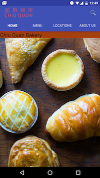
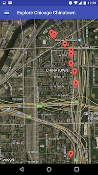

General Assembly
General Assembly's Android Development Immersive Program provided me the foundation of Android development. I was taught Java and how to use the Android SDK. The apps were developed using Android Studio, where I was taught XML and guidelines for Google's Material Design. I was exposed to Agile Methodology and development sprints. Versioning control was performed using GitHub and Git. I also had the opportunity to work with 3rd party APIs and services. Below are 2 of the projects I worked on during my time at General Assembly.
E-commerce App
During the duration of the program, I stayed at a friend's place in Chicago's Chinatown area. Growing up as a child I remember fondly the chinese pastries of my youth. Unfortunately, technology has not caught up with the bakeries of the small-business owners of Chinatown. I decided to create an e-commerce app for a bakery as a future scenario of what potential business opportunities lie ahead for them. I created an Android app using fragments for my tabs. I also implemented a search bar and filter buttons to search for specific pastries. The inventory was stored in a SQLite database and Picasso to display the images.

Google Maps App
On weekends in Chinatown, I've noticed tourists walking up and down the sidewalk without any maps or direction on where to go. So I decided to create a map of Chinatown (notice a common theme going on?) where I used Google's map API. I incorporated fragments for the navigation drawer to implement Google's Material design. I used a SQLite database to store the business information and Picasso to display the images. I used the OnClickListener off the information windows on the map markers to display fragments for the business' detail activity.